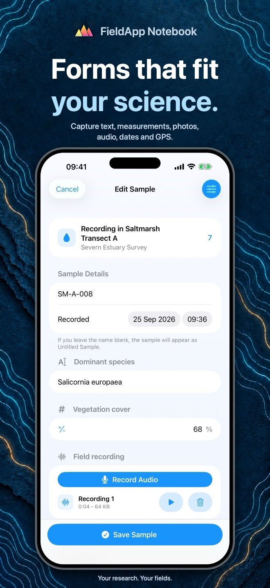

Fieldwork guide / 02
How to create a field survey form
Start with the record you need at the end of the project. Then build a form that captures those values consistently, with photographs, audio and location beside the measurements.

1. Choose the record structure
FieldApp organises work as Campaign → Sample set → Sample. Use a campaign for the overall project, a sample set for a related group of records, and a sample for each observation you want to become a row in that set's exported spreadsheet.
For example, a campaign could be a teaching survey, its sample sets could be separate site visits, and each sample could be one observation point. Decide this with the people collecting the data so that a “sample” means the same thing throughout the project.
From Campaigns, create or open a campaign and choose New Sample Set. Give the set a meaningful name, create it and open it. The form's custom fields are configured for this sample set; they appear on its samples.
2. Add fields and units
- Open Configure Fields from the sample set.
- Choose a Field type and enter a clear field name.
- For a Number field, enter units where appropriate, such as
cm. - Tap Add Field and repeat for the information you need.
- Use Edit to reorder the fields, then choose Save & Close.
Available types are Text, Long Text, Number, Boolean, Date, Photo, Audio Recording and Location. Samples also have their standard name and Recorded timestamp, so you do not need to create duplicate fields for those unless your workflow needs a distinct value.
3. Try an example survey form
This fictional observation-point form illustrates the field types. Adapt it to your own protocol; it is not a validated ecological sampling method.
| Field name | Type | What to record |
|---|---|---|
| Site code | Text | An identifier such as A01; use Text when leading zeros or letters matter. |
| Vegetation height | Number | A numeric value, with cm entered as the field's units. |
| Observer notes | Long Text | Conditions, uncertainty or anything unusual about this observation. |
| Site photograph | Photo | A photograph that helps interpret the measurement. |
| Spoken notes | Audio Recording | A short recording of context that is inconvenient to type. |
| Observation location | Location | The captured coordinates; check that a location was actually obtained. |
Use the sample's name for the observation identifier, for example Point_001. Keep labels concise and specific: “Height” is less clear than “Vegetation height”, while putting several measurements into one free-text field makes later analysis harder.
Set a convention for missing or uncertain measurements. Do not use zero as a stand-in for “not measured” when zero is a valid observation. Use notes to explain the reason, and check how your convention appears in an export.
4. Test and reuse the form
Create two or three practice samples. Include a decimal number, a long note, an attachment and a deliberately unmeasured value. Save and reopen them, then export the sample set and check that the columns and media references mean what you intended.
When the form works, return to Configure Fields and choose Save Fields as Template. In another sample set's field configuration, Apply a Template lets you reuse a saved field layout. Check the resulting field list before collecting records. Templates reuse the structure; they are not a way to share live records or synchronise devices.
If several people are collecting data, agree the same names, units and record structure before starting. A consistent form helps, but the app does not replace observer training, a field protocol or a review of the exported dataset.